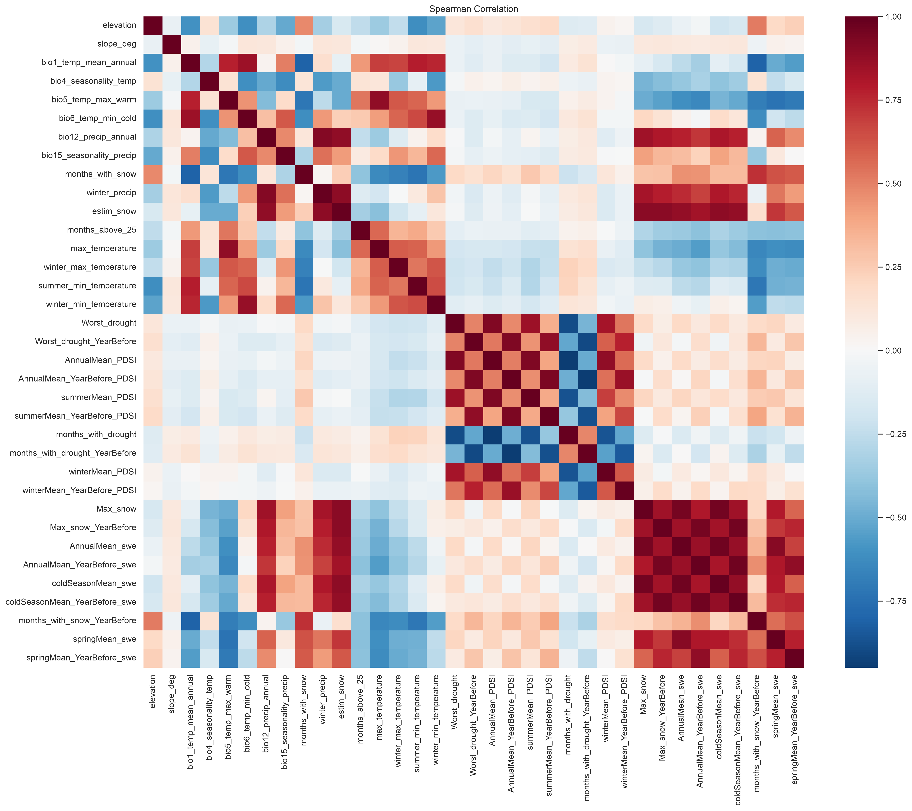
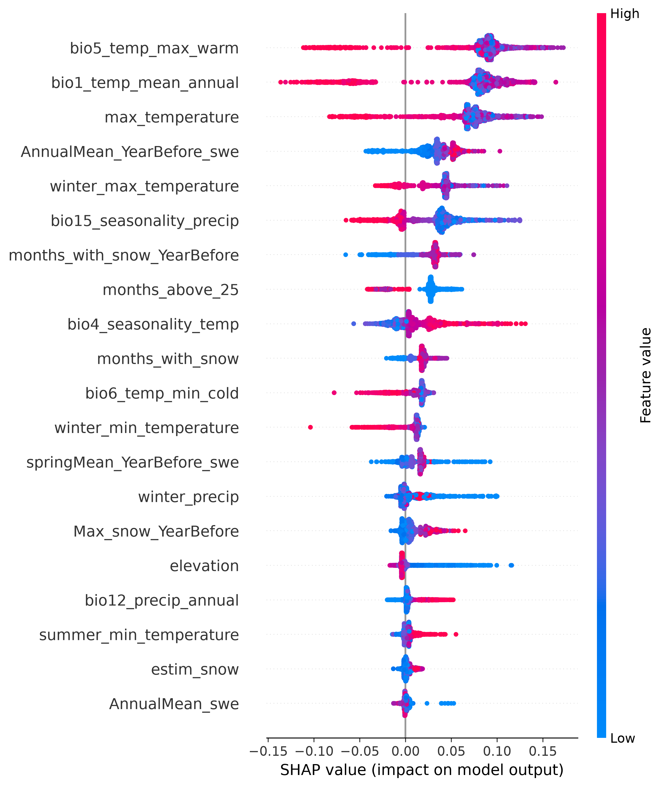
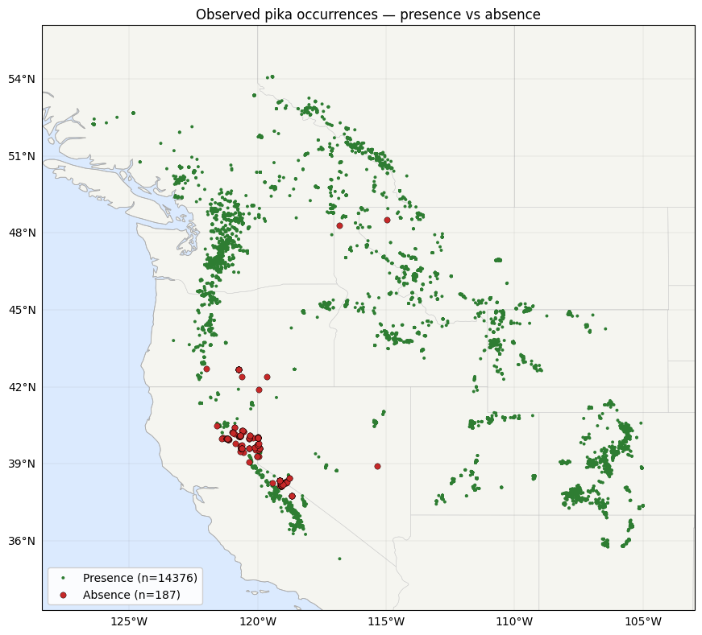
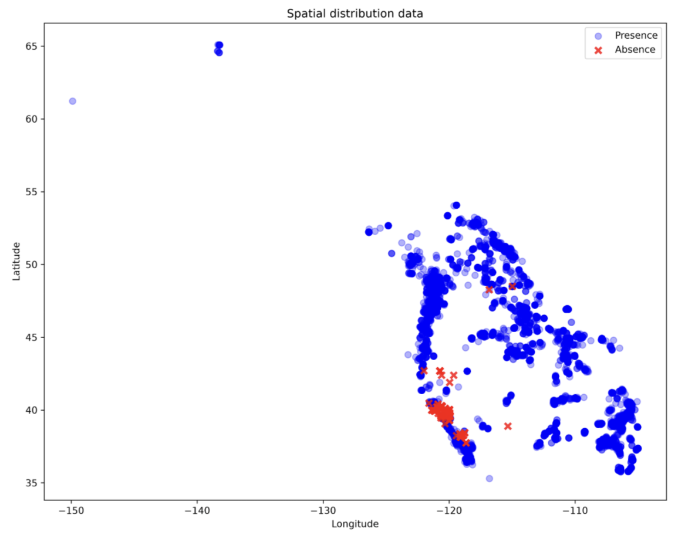
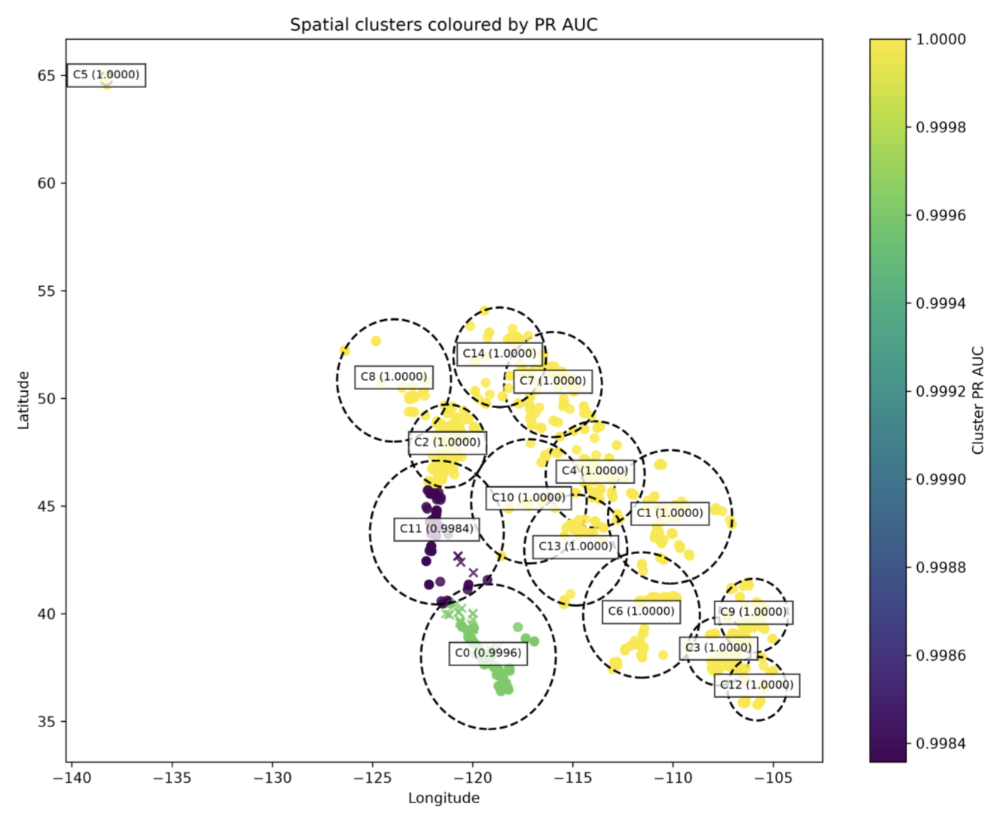

Ochotona princeps survives on a knife-edge of temperature. This is the data behind its disappearing mountain habitat — and a model built to help track it.
Climate change is one of the greatest threats to global biodiversity, altering species distributions, ecosystem functions, and the availability of suitable habitats worldwide. Rising temperatures, changes in precipitation patterns, and increasing frequency of extreme weather events are forcing many species to shift their geographic ranges or adapt to rapidly changing environmental conditions (IPCC, 2023). Predicting how species will respond to these changes has therefore become a major focus of conservation biology and ecological research. Species Distribution Models (SDMs), which combine species occurrence data with environmental variables, provide a powerful data-driven approach for identifying current habitat suitability and forecasting future changes under different climate scenarios (Elith & Leathwick, 2009).
This project applies data science techniques to model the current and future habitat suitability of the American pika (Ochotona princeps). Using presence and absence records of the species together with a suite of climatic and environmental predictors—including temperature, precipitation, elevation, slope, and vegetation-related variables , like severe drought indexes—we develop predictive habitat suitability models. Future climate projections are then incorporated to estimate how suitable habitat may change under projected climate change scenarios, providing insights into potential range shifts, habitat fragmentation, and potential population declines.
.
Meet the Species
High in the talus fields of the western mountains lives an animal that never sleeps through winter and cannot survive a hot afternoon.
The American pika (Ochotona princeps) is a small herbivorous mammal belonging to the family Ochotonidae, which is closely related to rabbits and hares. It inhabits alpine and subalpine mountain ecosystems throughout western North America, typically at elevations above 2,000 m, although some populations occur at lower elevations where local climatic conditions remain sufficiently cool (Smith & Weston, 1990). Pikas are strongly associated with talus slopes—accumulations of broken rock formed at the base of cliffs and mountain ridges—which provide shelter from predators, nesting sites, and access to cool underground microclimates. These rocky habitats contain numerous crevices that allow pikas to retreat below the surface during periods of extreme temperatures, creating a relatively stable thermal environment compared with the surrounding air.
Pikas are unusual among small mammals in two ways: they are active by day, all year round, and they never hibernate. Instead of sleeping through winter, a pika survives on a haypile — a cache of grasses and wildflowers it spends the entire summer clipping, sun-drying, and stacking under the rocks. Because they rely on this brief growing season to accumulate sufficient food reserves, any climate-driven changes that reduce plant productivity or alter the timing of snowmelt and vegetation growth may significantly affect their survival and reproductive success. American pikas also exhibit strong territorial behaviour. Individuals typically defend relatively small home ranges centred around their talus habitat and haypiles, using distinctive vocal calls to warn intruders and communicate with neighbouring individuals. Their limited dispersal ability means that movement between suitable habitat patches is often difficult, particularly when mountain habitats become increasingly fragmented. As climate change forces suitable environmental conditions to shift toward higher elevations, many pika populations may become isolated on mountain summits, where opportunities for further range expansion no longer exist—a phenomenon often described as the "escalator to extinction" (Beever et al., 2011).
The American pika has become an important indicator species for studying the ecological impacts of climate change because of its exceptional sensitivity to temperature. Pikas possess a high metabolic rate and dense insulating fur that enables survival during harsh winters but makes them vulnerable to overheating during warm weather. Studies have shown that prolonged exposure to temperatures above approximately 25–28°C can cause severe physiological stress and may even be fatal if individuals cannot access cooler refuges (Beever et al., 2011). Consequently, increasing temperatures, reduced snowpack, altered precipitation patterns, and more frequent heat waves threaten both the availability and quality of suitable habitat across their range.
How a Warming Climate Reaches the Talus
The American pika’s (Ochotona princeps) specialized biology leaves almost no margin for error in a warming world. Four primary climatic pressures—combined with restricted dispersal capabilities—explain why researchers treat this alpine specialist as a critical indicator species for climate impacts (IPCC, 2023; Beever et al., 2011).
Extreme Heat Sensitivity
Pikas possess high metabolic rates and dense, insulating fur that allow them to survive harsh alpine winters, but make them exceptionally vulnerable to overheating. Studies show that prolonged exposure to temperatures above 25–28°C causes severe physiological stress and can prove fatal (Beever et al., 2011). On hot summer afternoons, pikas are forced to cease surface activity and retreat into cool rock crevices, drastically reducing the time available for summer foraging and haypile building.
Shrinking Habitat, Fewer Places to Go
As regional warming progresses, suitable environmental conditions shift toward higher elevations. Because pikas exhibit strong territorial behavior and limited dispersal ability, moving between isolated mountain patches is difficult. As lower-elevation populations disappear, remaining groups are pushed toward mountain summits where no further range expansion is possible—a phenomenon known as the "escalator to extinction" (Beever et al., 2011).
Vanishing Snowpack
Winter snowpack acts as an essential thermal insulating layer over talus habitats, protecting pikas from extreme sub-zero cold while they remain active underground. As warming alters winter precipitation patterns and delays snow accumulation, pikas face a severe paradox: warmer regional temperatures that leave them increasingly exposed to lethal winter cold events.
Drought and Disappearing Forage
Unlike many alpine mammals, pikas do not hibernate. Their year-round survival depends on haying—collecting grasses, wildflowers, sedges, and shrubs during the brief summer to store in large "haypiles" beneath rocks (Smith & Weston, 1990). Increased frequency of severe droughts, reduced plant productivity, and altered timing of snowmelt threaten both the quality and availability of these critical food caches.
An important aspect of pika ecology, however, is that talus habitats can partially buffer the effects of climate change. Air circulates through the network of spaces between rocks, producing cooler and more stable subsurface temperatures than those measured above ground. These cool microclimates allow pikas to remain active beneath the rocks during periods of high surface temperatures and may provide temporary refuges from regional warming (Millar & Westfall, 2010). In addition, winter snowpack acts as an insulating layer over the talus, protecting pikas from extreme cold temperatures. Nevertheless, while these microrefugia may delay the impacts of climate change, they cannot fully compensate for long-term increases in regional temperatures or continued habitat loss. As warming progresses, the protective capacity of talus habitats is expected to diminish, making accurate predictions of future habitat suitability increasingly important.
.
The SDG Challenge
These ecological characteristics make the American pika an excellent model species for habitat suitability modelling. Its close association with specific environmental conditions, well-documented climatic sensitivity, relatively restricted dispersal, and extensive occurrence records make it particularly suitable for evaluating how changing climatic conditions may alter species distributions. Furthermore, because pikas occupy alpine ecosystems that are themselves highly vulnerable to climate change, understanding their future distribution provides valuable insights into the broader impacts of warming on mountain biodiversity.
Beyond its ecological significance, this project contributes directly to several United Nations Sustainable Development Goals (SDGs). Most notably, it supports SDG 13: Climate Action by improving understanding of the ecological consequences of climate change and providing scientific evidence that can inform adaptation and conservation strategies. The project also contributes to SDG 15: Life on Land, which seeks to protect terrestrial ecosystems, halt biodiversity loss, and conserve mountain ecosystems. By identifying areas likely to remain suitable for pikas under future climate conditions, this study can help prioritize conservation actions, guide habitat management, and support biodiversity monitoring in vulnerable alpine landscapes.
SDG 13
Climate Action
Calls for urgent action to combat climate change and its impacts — exactly the mechanism described above: rising heat, vanishing snowpack, and deepening drought.
SDG 15
Life on Land
Target 15.4 specifically calls for conserving mountain ecosystems and their biodiversity; Target 15.5 calls for urgent action to halt biodiversity loss and prevent the extinction of threatened species.
A cold-adapted mountain specialist with nowhere higher to climb is precisely the kind of species these targets exist to protect — and precisely the kind of species that benefits from a monitoring tool like the one this project builds.
02 · Research Questions
Research Questions
Before writing any code, a project like this needs a clear question to answer. PikaWatch is organized around four — each a different flavor of the same underlying problem.
Classification
Can we classify whether a given site is likely to have a present pika population, based on its climate, terrain, and drought conditions?
Explanation
Which environmental variables best distinguish presence from absence?
Forecasting
Can we forecast how a site's predicted suitability might shift under a specified future year's climate conditions?
Optimization
Can model predictions help prioritize limited conservation and field-survey resources toward the sites most likely to serve as climate refugia?
03 · Methodology
Why and How the Model Was Built
The proposed data product is an interactive web-based platform designed to transform complex species distribution modelling into an accessible, data-driven resource for climate education, environmental awareness, and conservation planning. By bridging the gap between advanced ecological data science and public understanding, the platform replaces traditional, static scientific reports with dynamic, interactive maps that allow users to explore current American pika (Ochotona princeps) habitat suitability and compare projected distributions under multiple future climate scenarios. A key differentiator of the platform lies in its integration of machine learning–based predictive models with diverse spatial datasets—including climate variables, topographic features, vegetation indices, and drought indicators—within an interactive geographic information system. Grounded in a rigorous scientific foundation, the platform utilizes documented species occurrence data, peer-reviewed modelling methodologies (Elith & Leathwick, 2009), and IPCC climate projections (IPCC, 2023) supported by established ecological research on pika climate sensitivity (Beever et al., 2011; Millar & Westfall, 2010). Ultimately, this solution provides students, educators, researchers, conservation practitioners, and policymakers with a credible, engaging tool that demonstrates the practical application of data science to real-world environmental challenges while fostering informed discussions around mountain ecosystem protection.
Data Collection
Species distribution models are only as good as the data behind them. This project compiles a comprehensive occurrence dataset for the American pika — with particular emphasis on reliable absence records, not just presence — and pairs every record with matching topographic and climatic information for the same place and year.
Occurrence Records
Each record pairs geographic coordinates and a year of observation with a species status of 1 (presence) or 0 (absence). Absence means a site with a documented historical pika record that was resurveyed and found unoccupied — a stronger signal than a simple "no sightings" location.
Long-Term Climate (WorldClim v2.1)
Bioclimatic normals averaged over 1970–2000 — BIO1, BIO4, BIO5, BIO6, BIO12, BIO15 — describing each location's long-term climatic niche. Since these are multi-decade averages, only the coordinates were needed to retrieve them.
Topography
Elevation and slope, derived directly from digital elevation data. Pikas are cold-adapted alpine specialists tied to steep, talus-strewn terrain, so both variables describe the physical structure of suitable habitat.
Interannual Climate (TerraClimate)
Monthly climate data, matched to each record's specific observation year and aggregated into ecologically meaningful indicators — snow water equivalent, snow duration, and seasonal temperature extremes — for that year and the year before.
Drought Indices (TerraClimate)
Palmer Drought Severity Index (PDSI) summaries — annual, summer, and winter means, plus a "worst month" value — computed for the observation year and lagged one year to capture delayed effects on forage.
Exploratory Data Analysis (EDA)
Following the compilation of the American pika occurrence dataset, an exploratory data analysis (EDA) was conducted to examine the structure, quality, and characteristics of the data prior to model development. The objective of this stage was to gain a comprehensive understanding of the distribution of presence and absence records, identify potential data quality issues, and explore the relationships among the environmental predictor variables .
The Data at a Glance
The combined dataset contains 17,949 presence records and 225 absence records, the latter categorized into recent absence, long absence, and locally extinct ("extirpated") sites within the Great Basin. This represents a presence-to-absence ratio of approximately 80:1. Due to this magnitude of imbalance, a logarithmic scale is used in the chart below to display both categories clearly.
Figure: record count by status, log scale — detected 17,949 · recent absence 20 · long absence 123 · extirpated 82.
Log scale — presence : absence ratio = 79.8 : 1.
Data preparation and cleaning
The dataset was constructed by combining species occurrence records with climatic and topographic variables extracted from WorldClim v2.1, TerraClimate, and digital elevation data. After removing records with missing values and duplicate observations, the final dataset contained 14,393 presence records and 187 absence records. Although the data exhibited a pronounced class imbalance, this issue was addressed during the subsequent modelling stage using appropriate sampling and validation techniques.
To ensure that the predictive models learned ecologically meaningful relationships rather than spatial or temporal patterns, geographic coordinates and the year of observation were excluded from the predictor set after environmental variables had been extracted. Consequently, the dataset used for analysis consisted exclusively of environmental variables describing topography, long-term climate conditions, temperature extremes, drought, and snow dynamics.
A Data-Quality Catch: Elevation Recorded as 0.0
36 presence rows (0.2% of the presence data) have elevation == 0.0 — implausible for an alpine specialist, and more likely a sentinel for a failed elevation lookup than a genuine sea-level record. These rows cluster at the extreme geographic edges of the presence data (e.g. the northernmost and southeasternmost points), consistent with coordinates falling outside the elevation raster's coverage. All these rows have been removed.
The Geographic Distribution
Spatial distribution varies significantly between observation types. Presence records cover a wide latitudinal range from approximately 34°N to 69°N across the American pika range. In contrast, the majority of the absence records are geographically restricted to a specific corridor between roughly 37.7°N and 48.5°N, encompassing the Sierra Nevada, Great Basin, and northern Rockies regions. Evaluating presence and absence across the entire dataset required controlling for this uneven spatial coverage (see Model Limitations section below).
Figure: latitude range — presence 34.2°–69.0°N vs. absence 37.7°–48.5°N.
Variables Correlations
The initial environmental variables break into a handful of tightly correlated groups: a temperature family (BIO1, BIO5, BIO6, max/min temperature and their summer/winter splits), a snow/SWE family (estimated snow, maximum snow-water-equivalent, annual mean SWE, cold-season mean SWE, months with snow), and moderately-to-strongly correlated current-year vs. previous-year pairs. Some pairs are nearly redundant and in these cases one of the feature has been prompty eliminated: max_temperature and summer_max_temperature correlate at r = 1.000, min_temperature and winter_min_temperature at r = 0.997.

Figure: Full Spearman correlation matrix for the initial 35 features considered in this project
Because our 35 remaining predictors consist of climate variables, it is expected that many of them are highly correlated, as they describe related aspects of the same climate system. Consequently, the objective of feature reduction is not simply to remove correlated variables, but to identify predictors that are both highly correlated and provide little additional predictive information beyond what is already captured by the remaining variables.
.
Pre-processing: Features & Preparation
Before modelling, the geographic coordinates and year of observation were dropped from the predictor set. Both were essential for retrieving the right environmental data in the first place, but leaving them in as predictors risked letting the model memorize where and when pikas were recorded, rather than learn the environmental conditions that actually determine habitat suitability.
From 35 Candidate Variables…
An initial set of 35 environmental predictors was assembled from the literature on species distribution modelling and pika ecology: WorldClim's long-term bioclimatic normals used as-is, plus topographic variables and TerraClimate's monthly data aggregated into seasonal temperature extremes, drought severity, and snow-related metrics — several with one-year-lagged versions to capture carry-over effects on forage and snowpack.
…to 20, via SHAP
Because climate variables are inherently correlated, the goal wasn't to strip out correlation itself, but to find predictors that were both highly correlated and added little beyond what other variables already captured. The model was first trained on all 35 predictors, then a SHAP (SHapley Additive exPlanations) analysis ranked each one by its average contribution to predictions. Low-importance variables flagged by SHAP were cross-checked against their Spearman correlation with stronger predictors and removed iteratively — trimming the set from 35 to 20 variables with no loss in predictive performance.
Temperature dominates the result: the maximum temperature of the warmest month (BIO5), the observation year's maximum temperature, and annual mean temperature (BIO1) are the three strongest predictors — consistent with the pika's well-documented sensitivity to heat. Snowpack metrics, such as snow water equivalent and months with snow, form an important secondary group. Elevation's individual contribution turns out to be small once climate is accounted for, since its effect on suitability is largely mediated through climate rather than independent.
Figure: SHAP feature importance for the final 20 predictors — temperature variables dominate, with snow water equivalent and precipitation seasonality as secondary drivers.
Why the Top Three Survive Despite Being Correlated
The correlation-based pruning step was only ever applied to low-importance variables flagged by SHAP — never to the top-ranked predictors, so bio5_temp_max_warm, max_temperature, and bio1_temp_mean_annual were never candidates for removal on correlation grounds alone. They're also not fully redundant: each captures a different temporal slice of the same underlying heat signal. BIO5 is the long-term (1970–2000) climatological normal for the warmest month; max_temperature is the actual maximum recorded in that specific observation year, capturing how far that year departed from the baseline; BIO1 is the long-term annual mean, reflecting overall thermal regime rather than a summer spike alone. A site can have a high BIO5 baseline but a mild max_temperature in a given year, or the reverse — and those are exactly the cases where keeping all three gives the model information a single temperature variable would miss.
Final Feature Set (20 variables)
Variable
Description
Topography
elevation
Shapes temperature, snow persistence, vegetation, and oxygen availability; pikas are predominantly a high-elevation, alpine species.
Temperature
bio5_temp_max_warm
Average maximum temperature of the warmest month (WorldClim BIO5) — the single strongest predictor, since extreme summer heat is a major limiting factor for pikas.
max_temperature
Maximum temperature recorded during the observation year — annual heat extremes.
bio1_temp_mean_annual
Average temperature across the year (WorldClim BIO1) — overall thermal conditions.
months_above_25
Count of months exceeding 25°C — frequency of potentially stressful heat conditions.
winter_max_temperature
Warmest point typically reached in winter — unusually warm winters can reduce snow persistence.
bio4_seasonality_temp
Variability through the year (WorldClim BIO4), linked to snow cover duration and growing-season length.
bio6_temp_min_cold
Average minimum temperature of the coldest month (WorldClim BIO6) — a proxy for winter extremes and the insulating role of snow.
winter_min_temperature
Winter minimum temperature during the observation year — the harshest conditions experienced that winter.
summer_min_temperature
Coolest point typically reached in summer — cool nighttime conditions during the growing season.
Precipitation & Snow
bio15_seasonality_precip
How evenly precipitation is distributed through the year (WorldClim BIO15), shaping plant growth and snow accumulation.
bio12_precip_annual
Total precipitation across the year (WorldClim BIO12), reflecting overall water availability for vegetation.
winter_precip
Total winter precipitation — a key input to snowpack formation.
months_with_snow
Number of months with snow cover during the observation year — duration of winter insulation.
months_with_snow_YearBefore
Months with snow cover in the previous year — a lagged version of the same effect.
estim_snow
Approximate total snow accumulation — insulates the talus in winter and feeds water availability after melt.
Snow Water Equivalent (SWE)
AnnualMean_swe
Average water stored in the snowpack across the observation year.
AnnualMean_YearBefore_swe
Annual mean SWE, previous year — carry-over snowpack effects on vegetation and hydrology.
Max_snow_YearBefore
Maximum SWE, previous year — the prior year's peak snow depth.
springMean_YearBefore_swe
Spring mean SWE, previous year — lagged snowmelt-timing effects on forage availability.
How the features influence the predictions
The SHAP summary plot below provides insight into how each environmental variable influences the model's predictions of habitat suitability. Unlike feature importance, which only ranks variables by their overall contribution, SHAP values show both the direction and magnitude of each predictor's effect for every observation. Each point represents a single observation, with its position on the x-axis indicating its SHAP value. Positive SHAP values increase the predicted habitat suitability, whereas negative SHAP values decrease it. Point colour indicates the value of the predictor, with red representing high values and blue representing low values.

Figure: SHAP summary plot for the final 20 predictors.
The SHAP summary plot confirms that temperature is the strongest driver of habitat suitability for the American pika. For the three most influential temperature variables—annual mean temperature (bio1), maximum temperature of the warmest month (bio5), and maximum temperature—high temperatures (red points) are predominantly associated with negative SHAP values, indicating a reduction in predicted habitat suitability. In contrast, lower temperatures (blue points) generally have positive SHAP values, increasing the likelihood of suitable habitat. This pattern reflects the pika's dependence on cool alpine environments and its sensitivity to heat stress.
Snow-related variables show the opposite pattern. Higher values of annual mean snow water equivalent (SWE) from the previous year, maximum SWE, and the number of snow-covered months are generally associated with positive SHAP values, suggesting that greater snow accumulation and longer-lasting snow cover improve habitat suitability. These conditions likely provide thermal insulation during winter and help maintain favourable moisture and temperature conditions throughout the year.
Precipitation seasonality (bio15) exhibits a more variable response, with both positive and negative SHAP values across its range. This indicates that its influence on habitat suitability is more complex and depends on interactions with other environmental conditions rather than following a simple linear trend.
Overall, the SHAP analysis reinforces the feature importance results by showing that temperature variables are the primary determinants of American pika habitat suitability, while snowpack characteristics provide important secondary controls. Together, these findings demonstrate that the final set of 20 environmental predictors captures the key climatic and topographic factors influencing pika distribution, resulting in a model that is both accurate and ecologically interpretabile.
Building the Model
Three tree-based ensemble classifiers were trained and compared on the final 20-feature set: Random Forest (RF), XGBoost, and LightGBM. All three handle non-linear relationships and correlated climate variables gracefully, need little preprocessing, and report which features mattered most to their own predictions — well suited to a predictor set dominated by intercorrelated bioclimatic variables.
Because presence records (14,393) vastly outnumber absence records (187) — roughly 77:1 — training used balanced resampling rather than the full imbalanced set: each iteration draws a random subset of about 200–225 presence records and pairs it with the available absence records, then randomly withholds 20% of that balanced subset for testing. Hyperparameters for each algorithm were tuned via cross-validation before the ensemble step below.
1
Balance the Classes
With presence outnumbering absence roughly 77:1, each iteration draws a random subset of ~200–225 presence records and pairs it with the available absence records, rather than training on the full imbalanced set.
2
Hold Out a Test Set
20% of each balanced subset is randomly withheld for testing, with the remaining 80% used for training — redrawn fresh for every ensemble iteration.
3
Tune Hyperparameters
For each of the three algorithms — RF, XGBoost, LightGBM — hyperparameters are optimized via cross-validation to maximize performance while limiting overfitting.
4
Build a 100-Model Ensemble
For each algorithm, 100 models are trained, each on a freshly resampled ~200-presence-record subset. Their predicted probabilities are averaged, and a site is classified as suitable when that average is ≥ 0.5.
5
Select the Final Model
The three ensembles are compared on independent test data; Random Forest yields the highest overall accuracy and is retained as the final habitat suitability model.
Evaluation
With a trained model in hand, its performance is measured against an independent testing set it never saw during training — 20% of the balanced dataset, withheld before any training took place. Of the three algorithms compared, the Random Forest ensemble produced the highest overall accuracy and was selected as the final habitat suitability model.
These figures come from the Random Forest ensemble at the default 0.5 probability threshold. Because only 187 absence records were available — and nearly all were needed for training — the independent test set contained just 38 absence observations, so the absence-side metrics below should be read with that small sample size in mind.
0.999
ROC-AUC
Area under the ROC curve. 0.5 is random; 1.0 is perfect discrimination between presence and absence.
0.99
Balanced Accuracy
Average of presence and absence recall — keeps the rare absence class from being swamped by the much larger presence class.
98%
Overall Accuracy
2,860 of 2,917 independent test observations classified correctly.
98%
Presence Recall
Share of true presence sites correctly identified — 2,822 of 2,879, with 57 missed (false negatives).
40%
Absence Precision
Of sites predicted absent, share truly absent. Low mainly because absence is so rare in the test set (38 of 2,917) — specificity is 100%, with zero false positives.
At the default 0.5 threshold, the model made zero false-positive predictions: every site it flagged as suitable habitat was a confirmed pika presence, at the cost of missing 57 true presence sites. Lowering the threshold to about 0.4 reduces those missed detections and raises absence precision to roughly 70% — trading some of that conservatism for more complete presence detection. Which threshold is "right" depends on whether the priority is a conservative estimate of suitable habitat or a more complete one.
Confusion Matrix — Random Forest Ensemble, Independent Test Set
Predicted Presence
Predicted Absence
Actual Presence
2,822 (TP)
57 (FN)
Actual Absence
0 (FP)
38 (TN)
The absence data is scarce and geographically clustered — concentrated within a limited number of resurvey sites — so this evaluation doesn't fully test how the model generalizes to unsampled parts of the pika's range. A follow-up check split the test set into 15 spatial clusters and found consistent PR-AUC across them, with no evidence of major regional variation — but only within regions already represented in the training data. Applying the model outside those surveyed regions would be an extrapolation beyond what has actually been validated.
04 · Looking Ahead
Projecting Habitat Suitability to 2050
The classifier was trained to learn how current climate and topographic conditions determine habitat suitability for the American pika. This model can then be used to explore how habitat suitability may change under future climate conditions. To do this, the present-day climate variables were replaced with projected climate data for approximately 2050 under two IPCC greenhouse gas emission scenarios, while keeping the terrain variables unchanged. The model then predicted habitat suitability for each site under these future conditions:
• Mild Scenario (SSP2-4.5): it imagines a future where the world takes some
action on emissions, so they rise a bit longer and then stabilise around the
middle of the century, leading to moderate warming.
• Extreme Scenario (SSP5-8.5): it imagines a future with little to no action, where
fossil-fuel use keeps growing throughout the century, pushing warming to the
highest levels among the standard scenarios
Explore the current habitat suitability and the projected changes under both climate scenarios below.
1
Future Climate Inputs
WorldClim CMIP6 projections supply 2050 temperature and precipitation under a mild (SSP2-4.5) and an extreme (SSP5-8.5) scenario.
2
Derived Features
Temperature-based and snow features are scaled from each site’s own projected warming, so present-day conditions carry forward consistently.
3
Re-scored Suitability
The trained classifier re-scores every site with these future inputs, from 0 (unsuitable) to 1 (highly suitable).
How These Projections Were Made
Climate variables come directly from WorldClim’s downscaled CMIP6 scenarios. Temperature-derived and snow features aren’t available from WorldClim directly, and TerraClimate’s future data uses fixed warming levels (+2°C / +4°C) rather than emissions scenarios — mixing the two would combine incompatible futures. To ensure consistency, we therefore derived all
features from the WorldClim projections.
For each site, we first measured the projected change in temperature between the
present and future climate. We then applied this change to the corresponding
temperature-based feature, using summer warming for summer variables and winter
warming for winter variables.
This adjustment was calculated separately for each site. Snow for example was scaled down in proportion to projected winter warming.
Choose a view: the occurrence records the model was trained on, or its projected suitability under each scenario.

Presence/absence records the model was trained on. Presence is spread widely across the pika’s range; absence is scarce and clustered in a handful of resurvey sites.
This is the raw occurrence data the model was trained on — no projection stats apply here.
05 · Model Limitations
Model Limitations
The Random Forest ensemble performed extremely well on the independent test set, but the geographic distribution of the underlying data points to an important caveat. Presence records are spread across a large portion of the study area, while absence records — just 187 in total — are concentrated within a limited number of survey locations, reflecting how the original field surveys were designed rather than the pika's actual range.

Figure: geographical distribution of pika presence and absence observations used for model training and evaluation.
The limited number and clustered distribution of absence observations make it difficult to fully assess how well the model generalizes across the entire current range of the American pika. Ideally, model transferability would be evaluated using independent presence and absence data collected from geographically distinct regions. However, because absence records were scarce, nearly all available observations were required during model training to ensure a balanced dataset and maximise the model's ability to learn the distinction between suitable and unsuitable habitat.
Although a comprehensive spatial validation was therefore not possible, we assessed whether model performance varied substantially among different geographic regions represented in the dataset. The testing observations were grouped into spatial clusters based on their geographic proximity, and Precision–Recall Area Under the Curve (PR-AUC) was calculated separately for each cluster. This approach provides an indication of whether the model performs consistently across different parts of the study area or whether its predictive ability is strongly influenced by location..

Figure: Precision–Recall AUC calculated separately for each of 15 spatial clusters in the testing dataset.
Consistent ≠ Universally Applicable
The local PR/ AUC values vary only modestly among the different spatial clusters. Although some geographic regions exhibit slightly higher or lower predictive performance than others, no substantial decrease in classification accuracy was observed. This consistency suggests that the model is not simply memorizing local environmental conditions but is capturing broader climatic relationships associated with pika habitat suitability.
Nevertheless, these results should be interpreted with appropriate caution. The spatial validation is limited to regions represented within the available survey data and does not constitute an independent test of model transferability to unsampled portions of the species' range. Consequently, the model should not be considered universally applicable across all pika habitats. Instead, the results indicate that the model can be applied with confidence to areas that are environmentally and geographically similar to those represented in the training data.
For this reason, all subsequent analyses of habitat suitability change were restricted to the geographical regions represented in the training and testing datasets. Restricting the analysis to these surveyed areas avoids extrapolating the model to regions where its predictive performance has not been evaluated and ensures that projected changes in habitat suitability are interpreted only within the environmental and geographic domain over which the model has been validated. This conservative approach increases confidence that the predicted changes reflect genuine responses to future climatic conditions rather than artefacts arising from extrapolation beyond the available observations
.
For this reason, all subsequent analyses of habitat suitability change are restricted to the geographic regions represented in the training and testing data. This avoids extrapolating the model into areas where its performance has never been evaluated, so that projected changes in suitability reflect genuine responses to future climate conditions rather than artefacts of extrapolation beyond the available observations.
06 · References
References
Key References
Beever, E. A., Ray, C., Wilkening, J. L., Brussard, P. F., & Mote, P. W.(2011).Contemporary climate change alters the pace and drivers of extinction.Global Change Biology, 17(6), 2054–2070.
Elith, J., & Leathwick, J. R.(2009).Species distribution models: Ecological explanation and prediction across space and time.Annual Review of Ecology, Evolution, and Systematics, 40(1), 677–697.
IPCC.(2023).Climate Change 2023: Synthesis Report. Contribution of Working Groups I, II and III to the Sixth Assessment Report of the Intergovernmental Panel on Climate Change[Core Writing Team, H. Lee and J. Romero (eds.)]. IPCC, Geneva, Switzerland.
Millar, C. I., & Westfall, R. D.(2010).Distribution and climatic relationships of the American pika (Ochotona princeps) in the Sierra Nevada and Western Great Basin, USA; periglacial landforms as refugia in warming climates.Arctic, Antarctic, and Alpine Research, 42(1), 76–88.
Qin, Y., Abatzoglou, J. T., Siebert, S., Huning, L. S., AghaKouchak, A., Mankin, J. S., Hong, C., Tong, D., Davis, S. J., & Mueller, N. D.(2020).Agricultural risks from changing snowmelt.Nature Climate Change, 10(5), 459–465.
Smith, A. T., & Weston, M. L.(1990).Ochotona princeps.Mammalian Species, (352), 1–8.
Data Sources
Abatzoglou, J. T., Dobrowski, S. Z., Parks, S. A., & Hegewisch, K. C.(2018).TerraClimate, a high-resolution global dataset of monthly climate and climatic water balance from 1958–2015.Scientific Data, 5, 170191. https://www.climatologylab.org/terraclimate.html
Fick, S. E., & Hijmans, R. J.(2017).WorldClim 2: New 1-km spatial resolution climate surfaces for global land areas.International Journal of Climatology, 37, 4302–4315. https://www.worldclim.org/data/index.html
Millar, C. I., Delany, D. L., Hersey, K. A., Jeffress, M. R., Smith, A. T., Van Gunst, K. J., & Westfall, R. D.(2018).Distribution, climatic relationships, and status of American pikas (Ochotona princeps) in the Great Basin, USA.Arctic, Antarctic, and Alpine Research, 50(1), e1436296. https://www.tandfonline.com/doi/full/10.1080/15230430.2018.1436296
The code for this project is available on GitHub. You can explore the repository to access the source code, data, and additional resources related to the PikaWatch project.